Der Badlion Client bringt verschiedene Mods mit sich, darunter Fullbright, die Keystrokes oder Ping-Anzeige. Das Modmenu kann man in einer Welt oder auf einem Server mit RShift öffnen oder im Pausemenu unter Badlion Mods. Man kann Mods aktivieren und deaktivieren.
Eine Liste aller aktuellen öffentlichen Badlion Mods:
Eine Liste aller aktuellen öffentlichen Badlion Mods:
| Mod | Icon | Beschreibung |
| Animations |  | Dieser Mod lässt Animationen aus der 1.7 in die 1.8 übertragen, wie man ein Item hält, mit dem Schwert schlägt oder blockt... |
| Armorstatus |  | Mit Armorstatus kann man sich im Playscreen seine Aktuelle Armor (Rüstung), Item und Durability anzeigen lassen. |
| Auto-Friend | Nimmt automatisch Freundschaftsanfragen auf Hypixel an. | |
| Auto-GG |  | Auf manchen Servern schreibt man nach einer Runde automatisch "gg", was "Good Game" oder "Gutes Spiel" heißt, um seinen Gegnern Respekt zu erweisen. |
| Autotext | Autotext erlaubt es dir auf der Tastatur Makrotasten festzulegen, womit man dann einen Text in den Minecraft Chat automatisch schreibt, wenn man diese drückt. Zum Beispiel kann ich mir auf "G" "gg" legen, womit ich, immer wenn ich "G" drücke "gg" schreibe. | |
| Autotip | Schreibt automatisch in einem Interval auf Hypixel in den Chat /tip, um eine Kostenlose Belohnung zu erhalten. | |
| Blockinfo |  | Mit Blockinfo kann man sich Informationen über den aktuellen Block anzeigen lassen, auf dem man sein Fadenkreuz hält, wie ID, Ausrichtung oder Lichtlevel. |
| Blockoverlay | Dieser Mod lässt dir custom einstellen, wie die Blockauswahl eines Blockes aussieht, Farbe, etc. | |
| Bossbar | Lässt dir die Bossbar vom Minecraft Enderdragon und Wither, also der Bossbar, custom einstellen. | |
| Chat | Mit diesem Mod kannst du dir den Badlion Chat verändern wie du willst. Du kannst | |
| Chunkborders |  | Zeigt dir die Chunks im Spiel an. |
| Clearglass |  | Macht die standart Minecraft Glasstextur innen ganz durchsichtig und nur außen den Rand. |
| Clearwater |  | Damit kann man unterwasser sehen, wie wenn man überwasser wäre. |
| Clock | Zeigt dir im Bild die Uhrzeit an. | |
| Combocounter | Zählt mit und zeigt dir an was für eine Combo man gibt, also wie oft man seinen Gegner schlägt ohne selber geschlagen zu werden. | |
| Coordinates | Zeigt dir deine Koordinaten mit Richtung (Himmelsrichtung/Pitch) und Biom an. | |
| CPS Anzeige | Zeigt dir an wie viele Clicks man pro Sekunde hat (CPS). | |
| Crosshair | Lässt dir dein eigenes Custom Crosshair erstellen lassen. | |
| Direction | Zeigt dir deine Himmelsrichtung an. | |
| Enchantglint |  | Lässt dir die Farbe vom Enchantglint und die Sichtbarkeit auf Items einstellen. |
| FOV-changer | Lässt dir die FOV (Field of View) für jede Gangart custom einstellen. | |
| FPS Anzeige | Zeigt dir an wie viele FPS (Frames per second / Bilder pro Sekunde) man hat. | |
| Fullbright | Stellt die Minecraft Gamma-Helligkeit auf Maximum | |
| Hitboxes | Zeigt dir die Hitbox von Entities an. | |
| Hitcolor | Lässt dir eine eigene Hitcolor einstellen, also wie das Entity, welches geschlagen wurde, gefärbt wird. | |
| Inventoryblur | Lässt das Erscheinungsbild in einer Gui im Hintergrund verschwommen (regulierbar) und/oder hell und klar erscheinen. | |
| Itemcounter |  | Zeigt dir an wie viele Items man von einer Sorte in seinem Inventar hat. |
| Iteminfo | Zeigt dir wie ähnlich Blockinfo Informationen über das aktuelle Item (Enchantments, etc...) an. | |
| Itemphysics | Lässt die Minecraft Items nicht drehen, schwebend sein, sondern mehr liegend. | |
| JustEnoughItems (JEI) |  |
Der Just Enough Items Mod ist nicht von Badlion, sondern wird in verschiedensten Modpacks verwendet, um zu sehen, wie Items oder Blöckge gecraftet werden. |
| Keystrokes | Zeigt dir an welchen Knopf man auf der Tastatur betätigt (Standart: WASD LMB RMB Leertaste) | |
| Levelhead |  | Zeigt das Hypixel-Level über dem Kopf des Spielers. |
| Lightoverlay | Zeigt dir an, ob auf dem jeweiligen Block ein feindlicher Mob spawnen kann. | |
| Memory Anzeige | Zeigt dir an, wie dein RAM belastet ist. | |
| Minimap | Zeigt dir eine Minimap der Umgebung an. | |
| MLG-Cobweb | Gibt dir Tipps, um einen MLG-Cobweb zu machen. | |
| Motionblur |  |
Lässt die Bewegung des Bildes ein bisschen verzerren, um eine sanftere Bewegung zu erzeugen. |
| Mumblelink | Sendet Mumble 3D Geräusche zu Minecraft. | |
| Namehistory | Zeigt dir alte Namen von einem Spieler an. | |
| Nickhider | Versteckt deinen Namen und Charakter auf Hypixel. | |
| NotEnoughUpdates (NEU) | 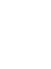 | Ein Hypixel Skyblockaddon. |
| Packdisplay | Zeigt dir an, mit welchem Resourcepack du im Moment spielst. | |
| Particles |  | Hier kannst du einstellen, wie viele Particle angezeigt werden sollen. |
| Perspective |  | Gibt dir eine weiter 3-Person ansicht, womit man, ohne den Charakter zu bewegen, sich umschauen kann. |
| Ping Anzeige | Zeigt dir deinen Ping zum jeweiligen Server an. | |
| Playercounter | Zeigt dir an, wie viele Spieler aktuell in deiner Welt oder auf deinem aktuellem Server sind. | |
| Potionstatus | Zeigt dir alle deine Effekte und deren Restzeit an. | |
| Protection Anzeige | Zeigt dir im Inventar deine Protection an, wie gut du ausgerüstet bist. | |
| Reachdisplay |  | Zeigt dir den Abstand an, mit wie viel Blöcken Entfernung du den Gegner geschlagen hat (Max: 3 Blöcke). |
| Replay | Addon zum Replaymod. | |
| Saturation | Zeigt dir dein Sättigungslevel an. | |
| Schematica | Ein Mod mit dem man sich Strukturen speichern und laden kann und dann nachbauen. | |
| Scoreboard |  | Lässt dir dein Scoreboard custom einstellen. |
| Serveradress | Zeigt dir die Serveradresse, mit dem du aktuell verbunden bist. | |
| Shinypots | Lässt ein verzaubertes Item das Ganze Feld leuchten und nicht nur die Pixel. | |
| Skyblockaddons | Für Minecraft Hypixel-Skyblock ein Mod. | |
| Stopwatch | Zeigt dir eine Stoppuhr an. | |
| Teamspeak | Zeigt dir deinen aktuellen Teamspeak an. | |
| Timechanger | Lässt dir deine eigene Ingame-Time ändern. | |
| Timers | Zeigt dir verschiedene von Servern unterstützte Timer an. | |
| Togglechat |  |
Ändert bestimmte Nachrichten im Chat von Hypixel. |
| Togglesneak |  | Toggelt dein Sneaken(Schleichen) von gedrückt halten auf wechseln. |
| Togglesprint | oggelt dein Sprinten von gedrückt halten auf wechseln. | |
| Waypoints | Lässt dir in einer Welt einen Wegpunkt erstellen, den man dann sieht. | |
| Zoom | Eine Erweiterung zum Optifinezoom, also einer Zoomstärke, usw... |